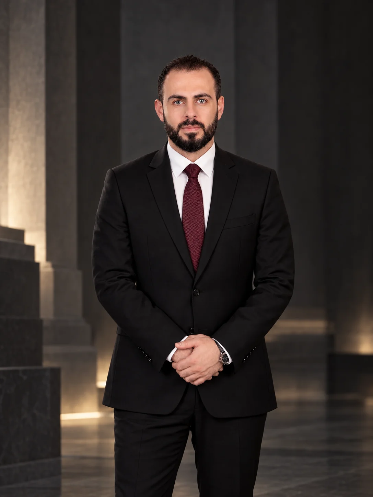
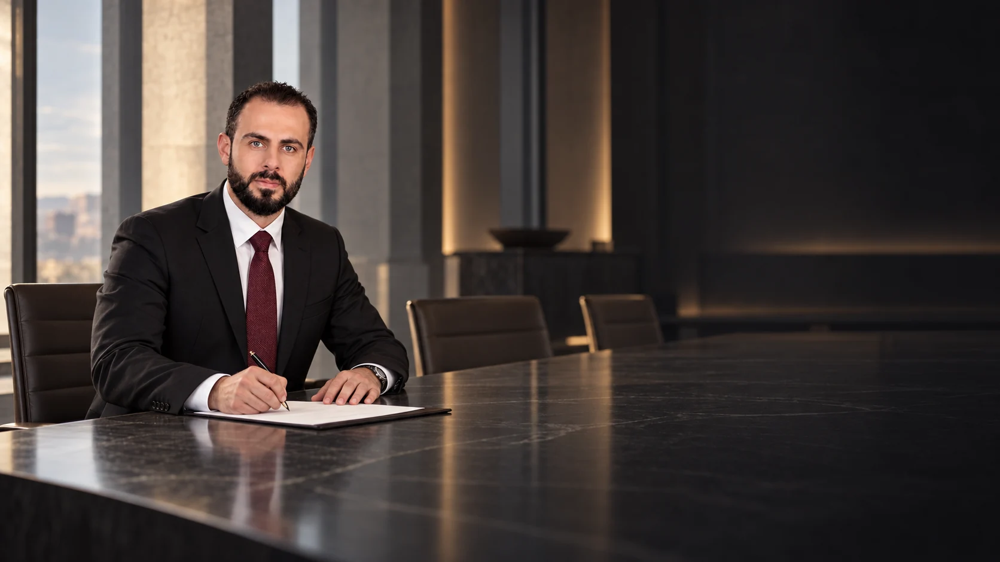

القطاع السيادي
عضو مجلس الإدارة
الصندوق السيادي السوري
المساهمة في قيادة الرؤية المؤسسية للاستثمار والتنمية.
من الرؤية إلى العمل؛ مسيرة في إدارة الاستثمار والتطوير العمراني، تستند إلى المسؤولية وتطمح إلى أثرٍ يدوم.


مواقع قيادية تربط بين إدارة الأصول والاستثمار، وتطوير المؤسسات، وصناعة فرص المستقبل.
عضو مجلس الإدارة
المساهمة في قيادة الرؤية المؤسسية للاستثمار والتنمية.
رئيس مجلس الإدارة
قيادة توجهات الشركة ضمن مشهد اقتصادي يتطلع إلى النمو.
القيادة الحقيقية تبدأ حين تتحول الرؤية إلى أثر يمكن للناس أن يلمسوه.
خبرات في الاستثمار والإدارة والتطوير العمراني، عبر مؤسسات ومشروعات متنوعة.
إدارة واستثمار العقارات المملوكة للصندوق السيادي السوري.
وزارة الإدارة المحلية · لمدة عام.
المشاركة في أعمال مجلس الإدارة.
شركة للدعاية والإعلان.
حكومة الإنقاذ · سابقاً.
وزارة الإدارة المحلية في حكومة الإنقاذ.
إدلب.
تأسيس وإدارة مؤسسة إعلامية.
لمدة سنتين.
لمدة سنة.
من التخطيط إلى الإنجاز.
دراسات جدوى وتنمية مستدامة.
متابعة قانونية.
إدارة مالية.
الترويج والإعلان.
تطبيقات الذكاء الاصطناعي.
حلول للأزمات.
مسارات عمل موثقة في التطوير العقاري والسياحي والإسكان والتخطيط العمراني.
الإشراف على إنشاء وتنفيذ مشاريع سياحية ومطاعم كبرى.
الإشراف على تنفيذ المشاريع الاستراتيجية وإدارتها.
خبرة في مشاريع العقارات السياحية.
التنظيم العمراني والحد من العشوائيات.
الإشراف على مشاريع الحدائق والملاعب والمسابح.
إدارة مشاريع سكنية تزيد على 10,000 شقة في عدة مواقع بالمحافظة.
دراسات تجمع الاقتصاد والسياسة والإعلام، مع تأهيل في التنمية والشؤون الدولية.
دورات وشهادات تطبيقية في الإدارة والمشاريع والإعلام والأدوات الرقمية.
دبلوم PMP في إدارة المشاريع الاحترافية من مركز الرائد بترخيص من جامعة إدلب، والتخطيط التشغيلي، وإدارة الفرق.
دبلوم المحاسبة من مركز غصن الزيتون، ودبلوم المراقبة والتقييم من مركز الفارس الدولي.
ICDL من جامعة إدلب، ومستويات إكسل الأول والثاني والثالث، وMS Project.
دورة مراسل صحفي في قناة الجزيرة، ودورات متقدمة في المونتاج والتصميم ببرامج Adobe في مركز كفرنبل.
التخطيط التشغيلي وإدارة الوقت والإدارة المكتبية من مركز الرائد، والخطابة في مركز البنيان، والتفاوض في المعهد التقني الأمني.
دورات A1 وA2 في مركز الفاتح بترخيص من IHH.
للتواصل المهني والفرص الاستراتيجية، يمكنكم مراسلتنا مباشرة.
Obayda.abdulbaky@gmail.com